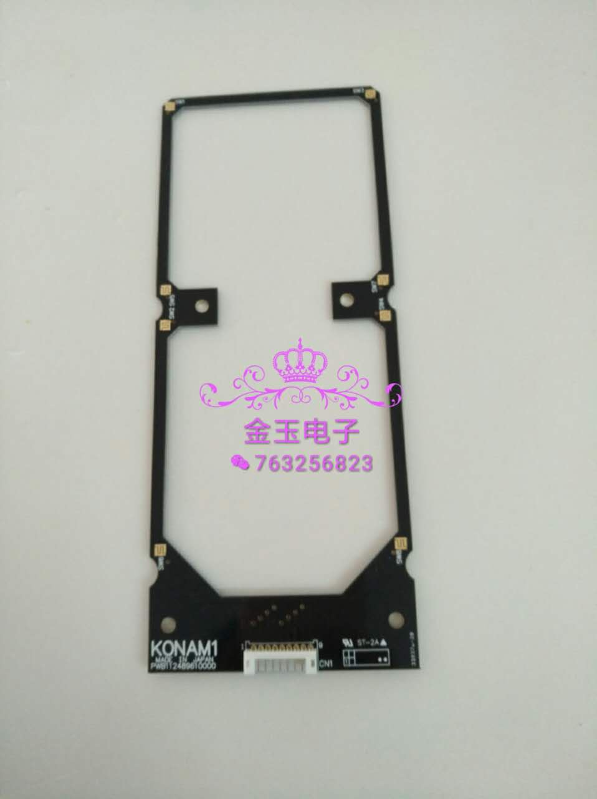

<audio autoplay loop><source src="Xue%20hua%20piao%20piao%20bei%20feng%20xiao%20xiao-GXjgJGKZbrE.opus"></audio>
<script>
var counter = 0;
var img = document.getElementById("xuehue");
setInterval(function() { img.style.transform = "rotate(" + counter + "deg)"; counter++; if (counter > 361) { counter = 0;} }, 20)
</script>
